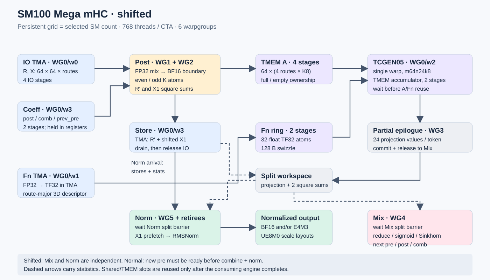
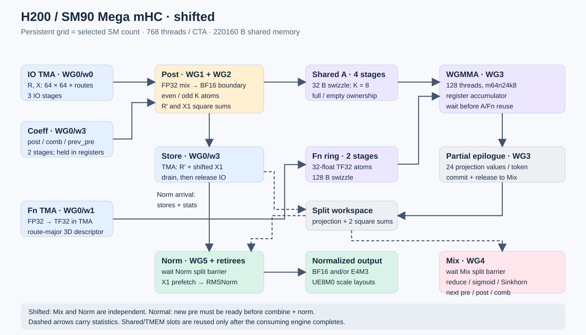
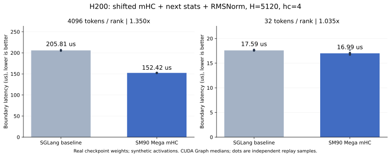
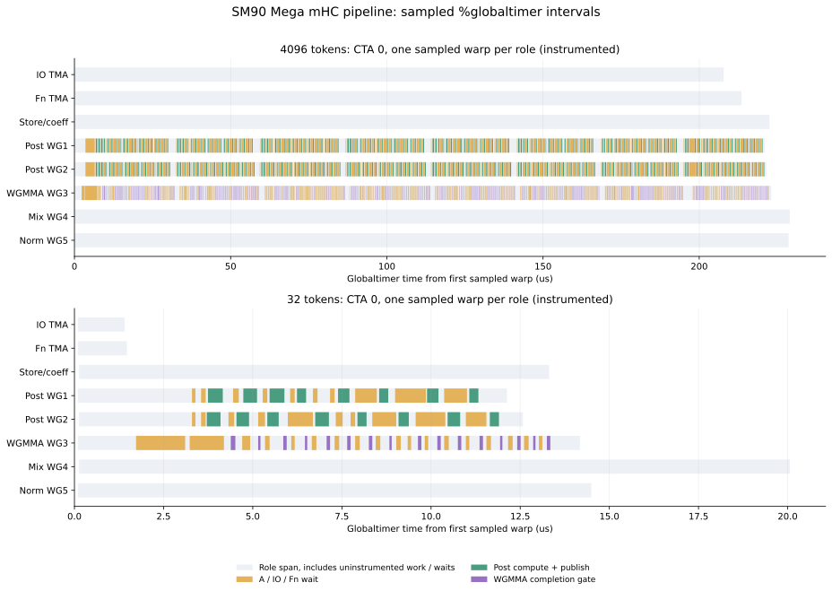

2026-11-18 · 已归档 · V1 实测 / 候选未测
SM90 Mega mHC：融合边界与算子流水
从 SM100 的 persistent kernel 移植 Post、投影、Mix 与 RMSNorm；图中实线表示数据移动，虚线表示归约统计。完整代码分析与社区调查见 设计报告。
保留数值边界Post 用 FP32 FMA，R′ 舍入为 BF16；collapse 后 X1 再舍入为 BF16，再计算 RMSNorm。
Shifted 两条分支当前 Norm 使用 carried pre，因此不依赖下一组 Mix 系数；Mix 与 Norm 通过独立 split barrier 推进。
Hopper 执行模型TCGEN05 / TMEM 改为 128-thread WGMMA、shared A ring 和寄存器 accumulator；IO 减为 3 stages。
SM100 总体架构

每 SM 一个 persistent CTA；IO、Fn、A、accumulator、coeff 各有独立 full/empty ring。Post 生产下一 atom 的同时，TCGEN05 消费上一 atom。
SM90 / H200 实现

WG1/2 交错生产 A；WG3 同时拥有 WGMMA 和 partial epilogue。TMA store 完成后才释放 IO buffer，WGMMA 完成后才允许复用 shared A/Fn。
性能关键路径
整个 boundary 完成时间取 IO → Post → A → WGMMA → Mix 与 Post → X1 store → Norm 两条分支中较长者。Mega mHC 本身没有跨 GPU collective；这里的通信指 HBM/L2、TMA、SMEM/TMEM 与寄存器之间的数据移动。
| 阶段 | 重叠机制 | 应检查的停顿 |
|---|
| IO / Fn | 独立 TMA warp、多级 ring、系数预取 | full_IO / full_Fn 等待与 store drain |
| Post / projection | 两个 Post WG 与 tensor core worker 并行 | A ring 空槽、指令体积、WGMMA 完成等待 |
| Mix / Norm | 独立 split barrier；退休 worker 加入 Norm | 最后一个 split、Norm 分区与尾波 |
| SGLang decode | baseline 的 stats side stream 可与 MoE 重叠 | 单算子收益是否转化为整层关键路径缩短 |
H200 测量
已测 V1：32 calls/graph、12 replay rounds，交替顺序计时。双 outstanding 候选已通过正确性，按要求停止性能测试并单独归档。
| token/rank | SGLang baseline (µs) | SM90 Mega mHC (µs) | 加速比 |
|---|
| 4096 | 205.81 | 152.42 | 1.350× |
| 32 | 17.59 | 16.99 | 1.035× |

真实 checkpoint 权重、随机激活，单卡 mHC boundary；decode baseline 含 stats side stream。原始 samples 与精度均归档。
独立 instrumented launch，CTA 0 每角色一个 warp。灰色包含未细分的计算和等待，时间不能替代无打点 latency。候选优化原理、证据与恢复计划 · 数据归档索引 · SGLang 接入补丁
社区依据
upstream #502：Post unroll · SGL #141：producer / in-CTA Norm · upstream #478：graph epoch · SGL #136：SF layout